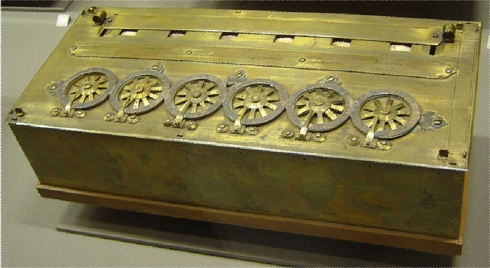

Os Primeiros computadores
Inicialamente assista os dois vídeos abaixo sobre a evolução dos primeiros computadores.
Vídeo 1
Vídeo 2
Faça uma leitura do texto: A história dos computadores e da computação.
A história dos computadores e da computação.
Hoje, os computadores estão presentes em nossa vida de uma forma nunca vista. Em casa, na escola, na universidade, na empresa e em qualquer outro lugar, eles estão sempre entre nós. Ao contrário do que parece, a computação não surgiu nos últimos anos ou décadas, e sim há mais de 7 mil anos.
Para começar, vamos falar sobre uma forma de calcular muito simples, mas que foi muito útil nas culturas antigas: o ábaco.
Ábaco, a primeira calculadora da história
Muitos povos da antiguidade utilizavam o ábaco para realizar cálculos do dia a dia, principalmente no comércio e no desenvolvimento de construções civis. Ele pode ser considerado a primeira máquina criada para cálculo, pois utilizava um sistema bastante simples e muito eficiente na resolução de problemas matemáticos. É basicamente um conjunto de varetas de forma paralela que contêm pequenas bolas para realizar a contagem.
Seu primeiro registro é datado de 5500 a.C. pelos povos que constituíam a Mesopotâmia. Contudo, o ábaco também foi usado por muitas outras culturas, e cada povo tem uma versão de específica dessa máquina, preservando a essência original. Seu nome na Roma Antiga era Calculus, termo do qual a palavra cálculo foi derivada.
Em operações matemáticas, ele é bastante útil para soma e subtração. Já para multiplicação e divisão não é muito recomendado, somente algumas versões mais complexas que a padrão.
Régua de cálculo

Durante vários séculos, o ábaco foi aperfeiçoado, sendo a principal ferramenta de cálculo por muito tempo. Entretanto, os principais intelectuais da época do Renascimento precisavam descobrir maneiras mais eficientes de efetuar cálculos; logo, em 1638, um padre inglês chamado William Oughtred criou uma tabela para a realização de multiplicações muito grandes. A base de sua invenção foram as pesquisas sobre logaritmos realizadas pelo escocês John Napier.
Até aquele momento, a multiplicação de números muito grandes era algo trabalhoso e demorado, porém Napier descobriu várias propriedades matemáticas e deu a elas o nome de logaritmos. Após o fato, multiplicar valores se tornou uma tarefa mais simples.
O mecanismo consistia em uma régua que já tinha uma boa quantidade de valores pré-calculados, organizados de forma que fossem acessados automaticamente. Uma espécie de ponteiro indicava o resultado do valor desejado.
Máquina de Pascal
Apesar de a régua de cálculo de Oughtred ser útil, os valores presentes nela eram predefinidos, o que não funcionava para calcular números que não estivessem presentes na tábua. Pouco tempo depois, em 1642, o matemático francês Blaise Pascal desenvolveu o que pode ser chamado de primeira calculadora mecânica da história, a Máquina de Pascal.
Seu funcionamento era baseado no uso de rodas interligadas que giravam na realização dos cálculos. A ideia inicial de Pascal era desenvolver uma máquina que realizasse as quatro operações matemáticas básicas, o que não aconteceu na prática, pois ela era capaz apenas de somar e subtrair. Por esse motivo, a tecnologia não foi muito bem acolhida na época.
Alguns anos após a Máquina de Pascal, em 1672, o alemão Gottfried Leibnitz conseguiu o que Pascal desejava: criar uma calculadora que efetuava soma e divisão, além de raiz quadrada.
A programação funcional
Em todas as máquinas e mecanismos mostrados, as operações estavam previamente programadas, não sendo possível inserir novas funções. Contudo, em 1801, o costureiro Joseph Marie Jacquard desenvolveu um sistema muito interessante. A indústria de Jacquard atuava no ramo de desenhos em tecidos, tarefa que ocupava muito tempo de trabalho manual. Vendo esse problema, ele construiu a primeira máquina realmente programável, com o objetivo de recortar os tecidos de forma automática.
Tal mecanismo foi chamado de Tear Programável, pois aceitava cartões com entrada do sistema. Dessa maneira, Jacquard perfurava o cartão com o desenho desejado e a máquina o reproduzia no tecido. A partir daquele momento, muitos esquemas foram influenciados.
A Máquina de Diferenças e o Engenho Analítico
Em 1822 foi publicado um artigo científico que prometia revolucionar tudo o que existia até então no ramo do cálculo eletrônico. O autor, Charles Babbage, afirmou que a máquina era capaz de calcular funções de diversas naturezas (trigonometria, logaritmos) de forma muito simples. Esse projeto foi chamado de Máquina de Diferenças.
Houve um grande boom na época, pois as ideias aplicadas estavam muito à frente do seu tempo. Devido a limitações técnicas e financeiras, a Máquina de Diferenças só pôde ser implementada muitos anos depois.
Após um período, em 1837, Babbage lançou uma nova máquina, chamada de Engenho Analítico (Máquina Analítica), que aproveitava todos os conceitos do Tear Programável, como o uso dos cartões. Além disso, instruções e comandos podiam ser informados pelos cartões, fazendo uso de registradores primitivos. A precisão chegava a 50 casas decimais.
Novamente, ela não pôde ser implementada na época por conta de limitações técnicas e financeiras. A tecnologia existente não era avançada o suficiente para a execução do projeto; contudo, a contribuição teórica de Babbage foi tão grande que muitas de suas ideias são usadas até hoje.
A Teoria de Boole
Se Babbage é o avô do computador do ponto de vista de arquitetura de hardware, o matemático George Boole pode ser considerado o pai da lógica moderna. Ele desenvolveu, em 1847, um sistema lógico que reduzia a representação de valores com dois algarismos: 0 e 1.
Em sua teoria, o número 1 tem significados como: ativo, ligado, existente, verdadeiro; e 0 representa o inverso: não ativo, desligado, não existente, falso. Para indicar valores intermediários, como "mais ou menos" ativo, é possível usar dois ou mais algarismos (bits) para a representação. Por exemplo:
- 00: desligado
- 01: carga baixa
- 10: carga moderada
- 11: carga alta
Todo o sistema lógico dos computadores atuais usa a Teoria de Boole de forma prática.
Máquina de Hollerith
O conceito de cartões desenvolvido no Tear Programável foi muito útil para a realização do censo de 1890 nos Estados Unidos. Na ocasião, Hermann Hollerith desenvolveu uma máquina que acelerou todo o processo de computação de dados.
Em vez da clássica caneta para marcar X em "sim" e "não", os agentes do censo perfuravam as opções nos cartões. Uma vez que os dados foram coletados, o processo de computação da informação demorou aproximadamente um terço do comum.
Computadores pré-modernos
Na primeira metade do século XX, vários computadores mecânicos foram desenvolvidos, e com o passar do tempo componentes eletrônicos foram adicionados aos projetos. Em 1931, Vannevar Bush implementou em um computador uma arquitetura binária propriamente dita usando os bits 0 e 1. A base decimal exigia que a eletricidade assumisse 10 voltagens, o que era muito difícil de ser controlado, por isso Bush usou a lógica de Boole, em que somente 2 níveis de voltagem eram suficientes.
A Segunda Guerra Mundial foi um grande incentivo no desenvolvimento de computadores, visto que as máquinas estavam se tornando mais úteis em tarefas de desencriptação de mensagens inimigas e criação de armas mais inteligentes. Entre os projetos desenvolvidos no período, os que mais se destacaram foram o Mark I, em 1944, desenvolvido na Universidade Harvard (EUA), e o Colossus, em 1946, criado por Allan Turing.
Sendo uma das figuras mais importantes da computação, Turing focou sua pesquisa na descoberta de problemas formais e práticos que poderiam ser resolvidos por computadores. Para aqueles que apresentavam solução, foi criada a famosa teoria da Máquina de Turing, que, com um número finito de operações, resolvia problemas computacionais de diversas ordens. A ideia foi colocada em prática com o Colossus.
Fonte: Tecnomundo
Exercícios de Fixação - Eixo Investigação Científica
01. Qual era a principal função dos primeiros computadores?
02. Em que consistia a régua de cálculo?
03. Qual foi a primeira máquina programável?
04. Quem foi considerado o pai da lógica e como funcionava a sua teoria?
05. Como a Máquina de Hollerith ajudou no censo dos Estados Unidos de 1890 ?
06. Pesquise quem foi Allan Turing e sua importância para a computação?
Avaliação Final
Habilidade Específica:(EMIFMAT01) Investigar e analisar situações problema identificando e selecionando conhecimentos matemáticos relevantes para uma.
01. Observe o sistema numérico romano e o egípcio apresentados, respectivamentes, na figura abaixo:
Pesquise como cada um deles funciona e crie um sistema numérico similiar ao romano e ao egipcio. Após isso escreva os números 220, 55, 12, 109 e 60 no seu sistema numérico criado.